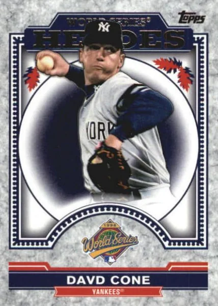

David Cone "Coney"
Career Highlights & Facts
(Facts are AI-generated and may require verification)
- This pitcher famously lied to his manager during a high-stakes postseason game, claiming he was physically capable of continuing despite being exhausted, ultimately helping the club secure a championship.
- He was known for his analytical approach to the game, often inventing new pitches on the spot and adjusting his arm angles to compensate for declining velocity as he aged.
- He once threw a perfect game at the home stadium of his organization, a feat witnessed by the only other pitcher to have accomplished the same milestone in a World Series game.
Would you like to find out more about David Cone?
Career Totals
| WAR | W | L | ERA | G | GS | SV | IP | SO | WHIP |
|---|---|---|---|---|---|---|---|---|---|
| 62.3 | 194 | 126 | 3.46 | 450 | 419 | 1 | 2898.2 | 2668 | 1.256 |
Statistics via Baseball-Reference.com
The Original Clue